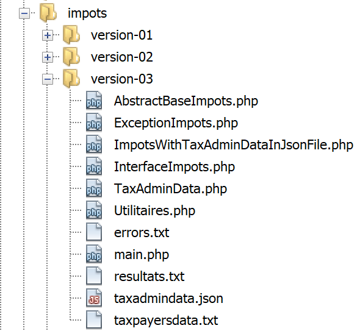

8. تمرين تطبيقي – الإصدار 3
سنعود إلى التمرين الذي تناولناه سابقًا (القسمان 4.3 و4.4) لحله باستخدام كود PHP يستخدم فئة.
8.1. هيكل دليل البرامج النصية

8.2. استثناء [ExceptionImpots]
في الإصدار 03، عندما يواجه منشئ أو طريقة فئة خطأً، فإنه سيرمي استثناء [ExceptionImpots] التالي:
تعليقات
- السطر 4: توجد فئة [ExceptionImpots] في مساحة اسم [Application]؛
- السطر 6: فئة [ExceptionImpots] تمتد من فئة PHP المحددة مسبقًا [RuntimeException]؛
- السطر 8: يتوقع المنشئ معلمتين:
- $message: هي رسالة الخطأ المرتبطة بالاستثناء؛
- $code: هو رمز الخطأ المرتبط بالاستثناء. إذا لم يكن موجودًا، فسيتم استخدام الرمز 0؛
8.3. فئة [TaxAdminData]
في الإصدار 02، تم جمع بيانات إدارة الضرائب:
- أولاً في ملف JSON؛
- ثم من ملف JSON هذا إلى مصفوفة ترابطية؛
في الإصدار 03، لا تزال بيانات إدارة الضرائب موجودة في ملف [taxadmindata.json] ولكن بأسماء سمات مختلفة:
{
"limites": [
9964,
27519,
73779,
156244,
0
],
"coeffR": [
0,
0.14,
0.3,
0.41,
0.45
],
"coeffN": [
0,
1394.96,
5798,
13913.69,
20163.45
],
"plafondQfDemiPart": 1551,
"plafondRevenusCelibatairePourReduction": 21037,
"plafondRevenusCouplePourReduction": 42074,
"valeurReducDemiPart": 3797,
"plafondDecoteCelibataire": 1196,
"plafondDecoteCouple": 1970,
"plafondImpotCouplePourDecote": 2627,
"plafondImpotCelibatairePourDecote": 1595,
"abattementDixPourcentMax": 12502,
"abattementDixPourcentMin": 437
}
في الإصدار 02، تم استخدام هذا الملف لتهيئة مصفوفة ترابطية. في الإصدار 03، سيقوم الملف بتهيئة فئة [TaxAdminData] التالية:
<?php
namespace Application;
class TaxAdminData {
// tax brackets
private $limites;
private $coeffR;
private $coeffN;
// tax calculation constants
private $plafondQfDemiPart;
private $plafondRevenusCelibatairePourReduction;
private $plafondRevenusCouplePourReduction;
private $valeurReducDemiPart;
private $plafondDecoteCelibataire;
private $plafondDecoteCouple;
private $plafondImpotCouplePourDecote;
private $plafondImpotCelibatairePourDecote;
private $abattementDixPourcentMax;
private $abattementDixPourcentMin;
// initialization
public function setFromJsonFile(string $taxAdminDataFilename): TaxAdminData {
// retrieve the contents of the tax data file
$fileContents = \file_get_contents($taxAdminDataFilename);
$erreur = FALSE;
// mistake?
if (!$fileContents) {
// we note the error
$erreur = TRUE;
$message = "Le fichier des données [$taxAdminDataFilename] n'existe pas";
}
if (!$erreur) {
// retrieve the jSON code from the configuration file in an associative array
$arrayTaxAdminData = \json_decode($fileContents, true);
// mistake?
if ($arrayTaxAdminData === FALSE) {
// we note the error
$erreur = TRUE;
$message = "Le fichier de données jSON [$taxAdminDataFilename] n'a pu être exploité correctement";
}
}
// mistake?
if ($erreur) {
// throw an exception
throw new ExceptionImpots($message);
}
// initialization of class attributes
foreach ($arrayTaxAdminData as $key => $value) {
$this->$key = $value;
}
// check that all keys have been initialized
$arrayOfAttributes = \get_object_vars($this);
foreach ($arrayOfAttributes as $key => $value) {
if (!isset($this->$key)) {
throw new ExceptionImpots("L'attribut [$key] de [TaxAdminData] n'a pas été initialisé");
}
}
// we check that we only have real values
foreach ($this as $key => $value) {
// $value must be a real number >=0 or an array of reals >=0
$result = $this->check($value);
// mistake?
if ($result->erreur) {
// throw an exception
throw new ExceptionImpots("La valeur de l'attribut [$key] est invalide");
} else {
// we note the value
$this->$key = $result->value;
}
}
// we return the object
return $this;
}
private function check($value): \stdClass {
…
return $result;
}
// toString
public function __toString() {
// object's Json string
return \json_encode(\get_object_vars($this), JSON_UNESCAPED_UNICODE);
}
// getters and setters
public function getLimites() {
return $this->limites;
}
public function getCoeffR() {
return $this->coeffR;
}
…
}
public function setLimites($limites) {
$this->limites = $limites;
return $this;
}
public function setCoeffR($coeffR) {
$this->coeffR = $coeffR;
return $this;
}
…
}
تعليقات
- الأسطر 6–20: الخصائص التي ستحتوي على الخصائص التي تحمل نفس الاسم من ملف JSON [taxadmindata.json]. هذه نقطة مهمة: خصائص فئة [TaxAdminData] مطابقة لتلك الموجودة في ملف JSON [taxadmindata.json]. هذه الميزة تجعل كتابة الكود أسهل بكثير؛
- لا تحتوي فئة [TaxAdminData] على منشئ. في PHP، لا يمكن وجود منشئات متعددة. وبالتالي، فإن تعريف منشئ واحد يمنع تهيئة الكائن بأي طريقة أخرى. من الآن فصاعدًا، لن تحتوي فئاتنا على منشئ، بل ستحتوي بدلاً من ذلك على عدة طرق من النوع [setFromSomething] تسمح بتهيئتها بطرق مختلفة. ثم يتم إنشاء كائن من النوع [TaxAdminData] باستخدام التعبير:
- السطر 23: تقوم الطريقة [setFromJsonFile] بتهيئة سمات الفئة باستخدام تلك التي تحمل نفس الاسم في ملف [$jsonFilename]؛
- الأسطر 24–42: يتم تحليل ملف JSON لإنشاء المصفوفة الترابطية [$arrayTaxAdminData]. لقد رأينا هذا الكود بالفعل في البرنامج النصي [main.php] من الإصدار 02؛
- الأسطر 44–47: إذا حدث خطأ أثناء معالجة ملف JSON، يتم إصدار استثناء. سينتقل هذا الاستثناء إلى البرنامج النصي الرئيسي [main.php]؛
- الأسطر 48–51: يتم تهيئة سمات الفئة. هنا، نستفيد من حقيقة أن المصفوفة الترابطية [$arrayTaxAdminData] والفئة [TaxAdminData] لهما سمات تحمل نفس أسماء القيم الموجودة في ملف JSON؛
- الأسطر 53–57: نتحقق من أن جميع سمات فئة [TaxAdminData] قد تمت تهيئتها؛
- السطر 53: يعرض التعبير [get_object_vars($this)] مصفوفة ترابطية تحتوي على سمات الكائن [$this]، أي سمات فئة [TaxAdminData]. هنا، من المهم أن نفهم أن عملية التهيئة في الأسطر 48–51 ربما أضافت سمات إلى الكائن [$this]. وبالتالي، إذا كتبنا:
فسيتم إضافة السمة [x] إلى الكائن [$this] حتى لو لم يتم إعلان هذه السمة في الفئة [TaxAdminData]. ما هو مؤكد هو أن السمات في الأسطر 6–20 هي بالفعل جزء من الكائن [$this]، ولكن ربما لم يتم تهيئتها. هذا خطأ يسهل الوقوع فيه؛ كل ما يتطلبه الأمر هو خطأ مطبعي في اسم سمة في ملف [taxadmindata.json]؛
- الأسطر 54-57: نكرر جميع سمات [$this]، وإذا لم يتم تهيئة أي منها، فإننا نطلق استثناءً؛
- قد يتم تهيئة السمة بقيمة غير صحيحة. في PHP، لا يمكن تحديد نوع للسمات. وبالتالي، فإن العملية:
ممكنة على الرغم من أن السمة [$plafondQfDemiPart] يجب أن تكون عددًا حقيقيًا؛
- الأسطر 59–71: نتحقق من أن كل سمة من سمات الفئة لها قيمة عدد حقيقي موجب أو صفر. تقوم الدالة [check] في السطر 76 بهذه المهمة. المعلمة [$value] الخاصة بها هي إما قيمة مفردة أو مصفوفة من القيم؛
- السطر 62: تُرجع الدالة [check] كائنًا من النوع [\stdClass] له سمتان:
- [error]: TRUE في حالة حدوث خطأ، FALSE في الحالات الأخرى؛
- [value]: القيمة العددية الفعلية المطابقة للمعلمة [$value] التي تم تمريرها في السطر 62؛
- السطر 64: نتحقق مما إذا كان التحقق قد نجح أم لا؛
- السطر 66: إذا لم تكن السمة عددًا حقيقيًا موجبًا أو صفرًا، يتم إصدار استثناء؛
- السطر 69: خلاف ذلك، نسجل قيمتها العددية؛
- السطر 73: نُرجع الكائن [$this] كنتيجة؛
وظيفة [check] هي كما يلي:
private function check($value): \stdClass {
// $value est soit un tableau d'éléments soit un unique élément
// on crée un tableau
if (!\is_array($value)) {
$tableau = [$value];
} else {
$tableau = $value;
}
// on transforme le tableau d'éléments de type non connu en tableau de réels
$newTableau = [];
$result = new \stdClass();
// les éléments du tableau doivent être des nombres décimaux positifs ou nuls
$modèle = '/^\s*([+]?)\s*(\d+\.\d*|\.\d+|\d+)\s*$/';
for ($i = 0; $i < count($tableau); $i ++) {
if (preg_match($modèle, $tableau[$i])) {
// on met le float dans newTableau
$newTableau[] = (float) $tableau[$i];
} else {
// on note l'erreur
$result->erreur = TRUE;
// on quitte
return $result;
}
}
// on rend le résultat
$result->erreur = FALSE;
if (!\is_array($value)) {
// une seule valeur
$result->value = $newTableau[0];
} else {
// une liste de valeurs
$result->value = $newTableau;
}
return $result;
}
تعليقات
- السطر 1: المعلمة [$value] هي إما مصفوفة أو عنصر واحد. علاوة على ذلك، فإن نوعها غير معروف. وتأتي القيمة من الملف [taxadmindata.json]. واعتمادًا على القيم المدخلة في هذا الملف، يمكن أن تكون القيم المقروءة أعدادًا صحيحة أو أعدادًا حقيقية أو سلاسل نصية أو قيمًا منطقية. على سبيل المثال:
"plafondQfDemiPart": 1551,
"plafondQfDemiPart": 1551.78,
"plafondQfDemiPart": "1551",
"plafondQfDemiPart": "xx",
في الحالة 1، تكون القيمة من النوع [integer]، وفي الحالة 2 من النوع [floating-point]، وفي الحالة 3 من النوع [string] الذي يمكن تحويله إلى رقم، وفي الحالة 4 من النوع [string] الذي لا يمكن تحويله إلى رقم؛
- الأسطر 4-8: نقوم بإنشاء مصفوفة من المعلمة [$value] المستلمة في السطر 1؛
- السطر 10: المصفوفة التي سنملؤها بأرقام حقيقية؛
- السطر 11: ستكون النتيجة كائنًا من النوع [\stdClass]؛
- السطر 13: تعبير علائقي لعدد حقيقي موجب أو صفر؛
- الأسطر 14-24: نتحقق من أن جميع عناصر المصفوفة [$tableau] هي أرقام حقيقية موجبة أو صفرية ونملأ المصفوفة [$newTableau] بهذه العناصر المحولة إلى النوع [float] (السطر 17)؛
- الأسطر 18-23: بمجرد اكتشاف عنصر ليس عددًا حقيقيًا موجبًا أو صفرًا، يتم تسجيل الخطأ في النتيجة وإرجاع النتيجة؛
- الأسطر 25–34: الحالة التي تم فيها إعلان جميع عناصر المصفوفة [$tableau] صالحة؛
- السطر 32: القيمة المُرجعة [$result→value] هي مصفوفة من الأعداد العائمة أو عدد عائم واحد؛
تُرجع الدالة [__toString] في الأسطر 82–85 سلسلة JSON لسمات وقيم الكائن [$this].
الأسطر 87–110: دالات الحصول والتعيين الخاصة بالفئة؛
ملاحظة: قد يكون من الممل أحيانًا كتابة جميع طرق get/set لفئة ما، خاصةً عندما يكون هناك العديد من الخصائص. يمكن لـ NetBeans إنشاء هذه الطرق تلقائيًا بالإضافة إلى المنشئ. للقيام بذلك، ما عليك سوى تحديد الخصائص [1]:

- في [2]، انقر بزر الماوس الأيمن في المكان الذي تريد إدراج الكود فيه، ثم حدد خيار [إدراج كود]؛

- في [4]، حدد أنك تريد إنشاء المنشئ؛
- في [5]، حدد جميع السمات: وهذا يعني أنك تريد أن يحتوي المنشئ على معلمة لكل سمة؛
- في [6]، حدد نمط منشئ Java؛
- في [7]، حدد أنك تريد صراحةً وجود الكلمة الرئيسية [public] قبل المنشئ؛
- في [8]، انقر فوق "موافق"؛

- في [9]، قام NetBeans بإنشاء المنشئ. ومع ذلك، لم يتمكن من تحديد أنواع المعلمات لأنه لا يعرفها. أضفها بنفسك [10]؛
لإنشاء متغيرات الحصول والتعيين، كرر الخطوات من 2 إلى 4، وفي الخطوة 4، حدد [Getter and Setter]:

- في [5]، حدد أنك تريد وظائف الحصول (getters) والتعيين (setters) لكل سمة من السمات؛
- في [6]، حدد أنك تريد أن تكون وظائف الاسترجاع والتعيين بالصيغة المستخدمة في Java: setAttribute، getAttribute؛
- في [7]، حدد أن تكون وظائف الحصول والتعيين هذه عامة؛
- في [8]، انقر فوق "موافق"؛

- في [9]، وظائف الحصول والتعيين التي أنشأتها NetBeans؛
احذف أدوات الحصول والتعيين هذه وكرر الخطوات من 2 إلى 7.
- في [8]، حدد خيار [Fluent Setter] الذي لم نحدده سابقًا؛
والنتيجة هي كما يلي:

ينتهي كل مُعيّن بعملية [return $this]. وهذا يسمح بتهيئة السمات على النحو التالي:
في الواقع، قيمة [$data→setLimites($limites)] (السطر 32 من الكود) هي [$this]، لذا فهي هنا [$data]. وبالتالي، يمكننا استدعاء الطريقة [setCoeffR($coeffR)] لهذا الكائن وهكذا دواليك، لأن هذه الطريقة بدورها تُرجع أيضًا [$this] (السطر 37 من الكود). يُسمى أسلوب كتابة طرق الفئة هذا، حيث تُرجع الطرق التي لا ينبغي أن تُرجع شيئًا الكائن [$this] بدلاً من ذلك، بالكتابة السلسة. وهو يجعل استخدام هذه الطرق أسهل.
8.4. واجهة [InterfaceImpots]
نقوم الآن بتعريف واجهة [InterfaceImpots] التالية [InterfaceImpots.php]:
<?php
// namespace
namespace Application;
interface InterfaceImpots {
// retrieve tax bracket data for tax calculations
// can throw the ExceptionImpots exception
public function getTaxAdminData(): TaxAdminData;
// the interface knows how to calculate a tax
public function calculerImpot(string $marié, int $enfants, int $salaire): array;
// the interface can process data in text files
// $usersFilename: user data file in the form of marital status, number of children, annual salary
// $resultsFilename: results file with marital status, number of children, annual salary, tax amount
// $errorsFilename: file of errors encountered
// can throw the ExceptionImpots exception
public function executeBatchImpots(string $usersFileName, string $resultsFileName, string $errorsFileName): void;
}
تعليقات
- السطر 4: يتم وضع الواجهة في مساحة اسم [Application]؛
- السطر 6: واجهة حساب الضرائب؛
- السطر 10: ستقوم طريقة [getTaxAdminData] باسترداد البيانات من إدارة الضرائب إلى كائن من النوع [TaxAdminData]، الذي قدمناه للتو. نظرًا لأن هذه البيانات قد تكون في ملف أو قاعدة بيانات أو حتى على الشبكة، فقد تفشل طريقة [getTaxAdminData] في استرداد البيانات. في هذه الحالة، ستقوم بإلقاء استثناء [ExceptionImpots]. هذه هي الطريقة القياسية في البرمجة الموجهة للكائنات للإشارة إلى خطأ وقع في طريقة أو منشئ؛
- السطر 13: ستقوم طريقة [calculateTax] بحساب ضريبة المستخدم؛
- السطر 20: ستقوم طريقة [executeBatchImpots] بحساب الضريبة لعدة دافعي ضرائب:
- [$usersFileName] هو اسم الملف النصي الذي يحتوي على بيانات دافعي الضرائب؛
- [$resultsFileName] هو اسم الملف النصي الذي يحتوي على مبالغ الضرائب لهؤلاء دافعي الضرائب؛
- [$errorsFileName] هو اسم الملف النصي الذي يحتوي على الأخطاء التي تمت مواجهتها أثناء معالجة هذه الملفات؛
قد يبدو محتوى الملف النصي [$usersFileName] كما يلي:
oui,2,55555
oui,2,50000
oui,3,50000
non,2,100000
non,3x,100000
oui,3,100000
oui,5,100000x
non,0,100000
oui,2,30000
non,0,200000
oui,3,200000
لاحظ أن السطرين 5 و7 يحتويان على إدخالات غير صحيحة.
سيكون محتوى الملف النصي [$resultsFileName] كما يلي:
والذي يوجد في الملف النصي [$errorsFileName] هو كما يلي:
8.5. فئة [Utilities]
نقوم أيضًا بتعريف فئة [Utilities] في ملف باسم [Utilities.php]:
<?php
// namespace
namespace Application;
// a class of utility functions
abstract class Utilitaires {
public static function cutNewLinechar(string $ligne): string {
// delete the end-of-line mark from $ligne if it exists
$longueur = strlen($ligne); // line length
while (substr($ligne, $longueur - 1, 1) == "\n" or substr($ligne, $longueur - 1, 1) == "\r") {
$ligne = substr($ligne, 0, $longueur - 1);
$longueur--;
}
// end - return the line
return($ligne);
}
}
تعليقات
- السطر 4: يتم وضع فئة [Utilities] أيضًا في مساحة الاسم [Examples]؛
- السطر 9: تزيل الطريقة [cutNewLineChar] أي حرف نهاية سطر من النص الذي يتم تمريره إليها كمعلمة. وتُرجع السطر الجديد الذي تم تشكيله بهذه الطريقة. لاحظ أن هذه طريقة ثابتة، مما يعني أنه سيتم استدعاؤها بالشكل [Utilities::cutNewLineChar]؛
8.6. الفئة المجردة [AbstractBaseImpots]
سيتم تنفيذ الواجهة [InterfaceImpots] بواسطة الفئة المجردة التالية [AbstractBaseImpots] [AbstractBaseImpots.php]:
<?php
// namespace
namespace Application;
// definition of an abstract class AbstractBaseImpots
abstract class AbstractBaseImpots implements InterfaceImpots {
// tax administration data
private $taxAdminData = NULL;
// data required for tax calculation
abstract function getTaxAdminData(): TaxAdminData;
// tAX CALCULATION
// --------------------------------------------------------------------------
public function calculerImpot(string $marié, int $enfants, int $salaire): array {
// $marié : yes, no
// $enfants : number of children
// $salaire: annual salary
// $this->taxAdminData: tax administration data
//
// we check that we have the correct data from the tax authorities
if ($this->taxAdminData === NULL) {
$this->taxAdminData = $this->getTaxAdminData();
}
// tax calculation with children
$result1 = $this->calculerImpot2($marié, $enfants, $salaire);
$impot1 = $result1["impôt"];
// tax calculation without children
if ($enfants != 0) {
$result2 = $this->calculerImpot2($marié, 0, $salaire);
$impot2 = $result2["impôt"];
// application of the family allowance ceiling
$plafonDemiPart = $this->taxAdminData->getPlafondQfDemiPart();
if ($enfants < 3) {
// $PLAFOND_QF_DEMI_PART euros for the first 2 children
$impot2 = $impot2 - $enfants * $plafonDemiPart;
} else {
// $PLAFOND_QF_DEMI_PART euros for the first 2 children, double for subsequent children
$impot2 = $impot2 - 2 * $plafonDemiPart - ($enfants - 2) * 2 * $plafonDemiPart;
}
} else {
$impot2 = $impot1;
$result2 = $result1;
}
// we take the highest tax
if ($impot1 > $impot2) {
$impot = $impot1;
$taux = $result1["taux"];
$surcôte = $result1["surcôte"];
} else {
$surcôte = $impot2 - $impot1 + $result2["surcôte"];
$impot = $impot2;
$taux = $result2["taux"];
}
// calculation of any discount
$décôte = $this->getDecôte($marié, $salaire, $impot);
$impot -= $décôte;
// calculation of any tax reduction
$réduction = $this->getRéduction($marié, $salaire, $enfants, $impot);
$impot -= $réduction;
// result
return ["impôt" => floor($impot), "surcôte" => $surcôte, "décôte" => $décôte, "réduction" => $réduction, "taux" => $taux];
}
// --------------------------------------------------------------------------
private function calculerImpot2(string $marié, int $enfants, float $salaire): array {
…
// result
return ["impôt" => $impôt, "surcôte" => $surcôte, "taux" => $coeffR[$i]];
}
// revenuImposable=annualwage-discount
// the allowance has a minimum and a maximum
private function getRevenuImposable(float $salaire): float {
…
// result
return floor($revenuImposable);
}
// calculates any discount
private function getDecôte(string $marié, float $salaire, float $impots): float {
…
// result
return ceil($décôte);
}
// calculates any reduction
private function getRéduction(string $marié, float $salaire, int $enfants, float $impots): float {
…
// result
return ceil($réduction);
}
public function executeBatchImpots(string $usersFileName, string $resultsFileName, string $errorsFileName): void {
…
}
}
تعليقات
- السطر 4: ستكون فئة [AbstractBaseImpots] في مساحة اسم [Application]، مثل العناصر الأخرى للتطبيق الذي يتم كتابته حاليًا؛
- السطر 7: تنفذ فئة [AbstractBaseImpots] واجهة [InterfaceImpots]؛
- السطر 9: سيتم وضع بيانات إدارة الضرائب في السمة [$taxAdminData]؛
- السطر 12: تنفيذ طريقة [getTaxAdminData] للواجهة. لا نعرف بعد كيفية تعريف هذه الطريقة: لقد رأينا مثالاً في القسم السابق حيث تم أخذ بيانات إدارة الضرائب من ملف JSON. سنرى حالة أخرى حيث سيتم استرداد البيانات من قاعدة بيانات. سيكون الأمر متروكًا للفئات المشتقة لتعريف محتوى طريقة [getTaxAdminData]. ستؤدي الحالتان السابقتان إلى ظهور فئتين مشتقتين. لذلك يتم إعلان طريقة [getTaxAdminData] على أنها مجردة، مما يجعل الفئة نفسها مجردة تلقائيًا (السطر 7)؛
- الأسطر 15–64: وظيفة حساب الضريبة التي سبق أن صادفناها في الأقسام link و link؛
- قامت النسخة 02 بتخزين بيانات إدارة الضرائب في مصفوفة ترابطية [$taxAdminData]. أما النسخة 03 فتخزنها في السمة [$this→taxAdminData]. الفرق الأول بين هذين النهجين هو مدى ظهور بيانات الضرائب:
- في الإصدار 02، لم يكن للمصفوفة الترابطية [$taxAdminData] نطاق عالمي. ولذلك، كانت تُمرَّر كمعلمة إلى جميع دوال حساب الضرائب؛
- في الإصدار 03، تتمتع السمة [$this→taxAdminData] برؤية عامة لجميع أساليب الفئة. وبالتالي، لا يتم تمريرها كمعلمة إلى جميع وظائف حساب الضرائب؛
- ينبع الاختلاف الثاني من حقيقة أن الإصدار 03 يستبدل الدوال بأساليب الفئة. يتم الآن استدعاء كل أسلوب باستخدام التعبير [$this→getMethod(…)] (الأسطر 27، 31، 57، 60)؛
- والاختلاف الثالث هو أنه عندما تبدأ طريقة [calculateTax] عملها، فإنها لا تعرف ما إذا كانت السمة [private $taxAdminData] التي تحتاجها قد تم تهيئتها أم لا. ويرجع ذلك إلى أن مُنشئ الفئة لا يقوم بتهيئتها. لذلك، فإن الأمر متروك لطريقة [calculateTax] للقيام بذلك باستخدام طريقة [getTaxAdminData] في السطر 12. وهذا ما يتم في الأسطر 23-25؛
- بصرف النظر عن هذه الاختلافات، تظل طرق حساب الضريبة كما هي في الإصدارات السابقة؛
تكون الدالة [executeBatchImpots] كما يلي:
public function executeBatchImpots(string $usersFileName, string $resultsFileName, string $errorsFileName): void {
// pas mal d'erreurs peuvent se produire dès qu'on gère des fichiers
try {
// ouverture fichier des erreurs
$errors = fopen($errorsFileName, "w");
if (!$errors) {
throw new ExceptionImpots("Impossible de créer le fichier des erreurs [$errorsFileName]", 10);
}
// ouverture fichier des résultats
$results = fopen($resultsFileName, "w");
if (!$results) {
throw new ExceptionImpots("Impossible de créer le fichier des résultats [$resultsFileName]", 11);
}
// lecture des données utilisateur
// chaque ligne a la forme statut marital, nombre d'enfants, salaire annuel
$data = fopen($usersFileName, "r");
if (!$data) {
throw new ExceptionImpots("Impossible d'ouvrir en lecture les déclarations des contribuables [$usersFileName]", 12);
}
// on exploite la ligne courante du fichier des données utilisateur
// qui a la forme statut marital, nombre d'enfants, salaire annuel
$num = 1; // n° ligne courante
$nbErreurs = 0; // nbre d'erreurs rencontrées
while ($ligne = fgets($data, 100)) {
// debug
// print "ligne n° " . ($i + 1) . " : " . $ligne;
// on enlève l'éventuelle marque de fin de ligne
$ligne = Utilitaires::cutNewLineChar($ligne);
// on récupère les 3 champs marié:enfants:salaire qui forment $ligne
list($marié, $enfants, $salaire) = explode(",", $ligne);
// on les vérifie
// le statut marital doit être oui ou non
$marié = trim(strtolower($marié));
$erreur = ($marié !== "oui" and $marié !== "non");
if (!$erreur) {
// le nombre d'enfants doit être un entier
$enfants = trim($enfants);
if (!preg_match("/^\s*\d+\s*$/", $enfants)) {
$erreur = TRUE;
} else {
$enfants = (int) $enfants;
}
}
if (!$erreur) {
// le salaire est un entier sans les centimes d'euros
$salaire = trim($salaire);
if (!preg_match("/^\s*\d+\s*$/", $salaire)) {
$erreur = TRUE;
} else {
$salaire = (int) $salaire;
}
}
// erreur ?
if ($erreur) {
fputs($errors, "la ligne [$num] du fichier [$usersFileName] est erronée\n");
$nbErreurs++;
} else {
// on calcule l'impôt
$result = $this->calculerImpot($marié, (int) $enfants, (int) $salaire);
// on inscrit le résultat dans le fichier des résultats
$result = ["marié" => $marié, "enfants" => $enfants, "salaire" => $salaire] + $result;
fputs($results, \json_encode($result, JSON_UNESCAPED_UNICODE) . "\n");
}
// ligne suivante
$num++;
}
// des erreurs ?
if ($nbErreurs > 0) {
throw new ExceptionImpots("Il y a eu des erreurs", 15);
}
} catch (ExceptionImpots $ex) {
// on relance l'exception
throw $ex;
} finally {
// on ferme tous les fichiers
fclose($data);
fclose($results);
fclose($errors);
}
}
تعليقات على الكود
- السطر 1: تأخذ الدالة ثلاثة معلمات:
- [$usersFileName]: اسم الملف النصي الذي يحتوي على بيانات دافعي الضرائب. يحتوي كل سطر من النص على بيانات دافع الضرائب بالصيغة التالية: الحالة الاجتماعية (نعم/لا)، عدد الأبناء، الراتب السنوي:
- (تابع)
- [$resultsFileName]: اسم الملف النصي الذي سيحتوي على النتائج. سيكون لكل سطر من النص التنسيق التالي:
- (تابع)
- [$errorsFileName]: اسم الملف النصي الذي يحتوي على الأخطاء:
la ligne [5] du fichier [taxpayersdata.txt] est erronée
la ligne [7] du fichier [taxpayersdata.txt] est erronée
- السطر 3: نظرًا لأن عددًا من العمليات قد يؤدي إلى حدوث استثناء، فإن كتلة try / catch / finally تحيط بكامل كود الأسلوب؛
- الأسطر 3–19: يتم فتح الملفات الثلاثة. يتم إلقاء استثناء بمجرد فشل عملية الفتح؛
- السطر 24: تُقرأ أسطر ملف [$data] واحدة تلو الأخرى في مجموعات تصل إلى 100 حرف (طول جميع الأسطر أقل من 100 حرف)؛
- السطر 28: تُستخدم الطريقة الثابتة [Utilities::cutNewLineChar] لإزالة أي أحرف نهاية سطر؛
- السطر 30: يتم استرداد العناصر الثلاثة للسطر المقروء؛
- الأسطر 33–52: يتم التحقق من صحة العناصر الثلاثة. هنا، لا يتم إلقاء استثناء في حالة حدوث خطأ، ولكن يتم كتابة رسالة الخطأ في الملف النصي [$errors] (السطر 55)؛
- السطر 59: إذا كان السطر المقروء صالحًا، يتم حساب الضريبة. يتم الحصول على النتيجة كمصفوفة ترابطية ["tax" => floor($tax), "surcharge" => $surcharge, "discount" => $discount, "reduction" => $reduction, "rate" => $rate]؛
- السطر 61: تتم إضافة المفاتيح [married, children, salary] إلى النتيجة؛
- السطر 61: يتم كتابة النتيجة إلى الملف النصي [$results] في شكل سلسلة JSON للنتيجة التي تم الحصول عليها؛
- الأسطر 68–70: في نهاية معالجة ملف [$data]، نتحقق من عدد الأسطر الخاطئة التي تمت مواجهتها. إذا كان هناك سطر واحد على الأقل، فإننا نطلق استثناءً؛
- الأسطر 71–74: نلتقط الاستثناء الذي ربما أطلقه الكود ونعيد إطلاقه على الفور (السطر 73). الغرض من هذه التقنية هو تضمين كتلة [finally] في الأسطر 74–79: بغض النظر عن كيفية انتهاء تنفيذ كود الأسلوب، يتم إغلاق الملفات الثلاثة التي ربما تم فتحها بواسطة هذا الكود. لا يتسبب إغلاق ملف لم يتم فتحه في حدوث خطأ؛
8.7. فئة [ImpotsWithTaxAdminDataInJsonFile]
لا تنفذ الفئة المجردة [AbstractBaseImpots] طريقة [getTaxAdminData] الخاصة بواجهة [InterfaceImpots]. لذلك يجب علينا تعريفها في فئة مشتقة. نقوم بذلك في الفئة المشتقة التالية [ImpotsWithTaxAdminDataInJsonFile]:
<?php
// namespace
namespace Application;
// definition of a ImpotsWithDataInArrays class
class ImpotsWithTaxAdminDataInJsonFile extends AbstractBaseImpots {
// a Data attribute
private $taxAdminData;
// the manufacturer
public function __construct(string $jsonFileName) {
// initialize $this->taxAdminData from file jSON
$this->taxAdminData = (new TaxAdminData())->setFromJsonFile($jsonFileName);
}
// returns data for tax calculation
public function getTaxAdminData(): TaxAdminData {
// we make the attribute [$this->taxAdminData]
return $this->taxAdminData;
}
}
تعليقات
- السطر 7: الفئة [ImpotsWithTaxAdminDataInJsonFile] تمتد من الفئة المجردة [AbstractBaseImpots]. سيتعين عليها تعريف الطريقة [getTaxAdminData] التي لم تحددها الفئة الأم؛
- السطر 9: ستحتوي السمة [$taxAdminData] على بيانات إدارة الضرائب؛
- الأسطر 12-15: يتلقى المنشئ كمعلمة وحيدة له اسم ملف JSON الذي يحتوي على البيانات الضريبية؛
- السطر 14: يتم إنشاء كائن من النوع [TaxAdminData] ثم تهيئته. قد تؤدي هذه العملية إلى إلقاء استثناء من النوع [ExceptionImpots]. سينتقل هذا الاستثناء إلى البرنامج النصي الرئيسي [main.php]؛
- الأسطر 18-20: نقدم نصًا لطريقة [getTaxAdminData]، التي لم تحددها الفئة الأصلية. هنا، نعيد ببساطة السمة [$this->taxAdminData] التي تم تهيئتها بواسطة المنشئ؛
8.8. البرنامج النصي [main.php]
يتم استخدام هذه الفئات والواجهات بواسطة البرنامج النصي [main.php] التالي:
<?php
// strict adherence to declared types of function parameters
declare(strict_types = 1);
// namespace
namespace Application;
// interface and class inclusion
require_once __DIR__ . '/InterfaceImpots.php';
require_once __DIR__ . "/TaxAdminData.php";
require_once __DIR__ . '/ExceptionImpots.php';
require_once __DIR__ . '/Utilitaires.php';
require_once __DIR__ . '/AbstractBaseImpots.php';
require_once __DIR__ . "/ImpotsWithTaxAdminDataInJsonFile.php";
// test -----------------------------------------------------
// definition of constants
const TAXPAYERSDATA_FILENAME = "taxpayersdata.txt";
const RESULTS_FILENAME = "resultats.txt";
const ERRORS_FILENAME = "errors.txt";
const TAXADMINDATA_FILENAME = "taxadmindata.json";
try {
// create a ImpotsWithTaxAdminDataInJsonFile object
$impots = new ImpotsWithTaxAdminDataInJsonFile(TAXADMINDATA_FILENAME);
// we execute the tax batch
$impots->executeBatchImpots(TAXPAYERSDATA_FILENAME, RESULTS_FILENAME, ERRORS_FILENAME);
} catch (ExceptionImpots $ex) {
// error is displayed
print $ex->getMessage() . "\n";
}
// end
print "Terminé\n";
exit();
تعليقات
- السطر 4: يتم فرض الالتزام الصارم بأنواع معلمات الدالة؛
- السطر 7: يتم أيضًا وضع البرنامج النصي [main.php] في مساحة اسم [Application]؛
- الأسطر 10–15: نخبر مترجم PHP بمكان وجود الفئات والواجهات التي يستخدمها البرنامج النصي. لاحظ أننا لم نستخدم هنا عبارة `use` لإعلان الأسماء الكاملة للفئات التي يستخدمها البرنامج النصي. وهذا غير ضروري لأن البرنامج النصي والفئات موجودة في نفس مساحة الاسم [Application]؛
- الأسطر 18–22: أسماء الملفات النصية المستخدمة في البرنامج النصي؛
- الأسطر 24–29: يتم إنشاء كائن [ImpotsWithTaxAdminDataInJsonFile]، ويتم التعامل مع أي استثناءات؛
- السطر 28: يتم تنفيذ الأسلوب [executeBatchImpots]، الذي يحسب الضرائب لجميع دافعي الضرائب في الملف [TAXPAYERSDATA_FILENAME]. سيتم حفظ النتائج في الملف [RESULTS_FILENAME]، وأي أخطاء في الملف [ERRORS_FILENAME]؛
- الأسطر 29-32: في حالة حدوث خطأ فادح، يتم عرض رسالة الخطأ؛
النتائج
باستخدام ملف دافعي الضرائب التالي [taxpayersdata.txt]:
oui,2,55555
oui,2,50000
oui,3,50000
non,2,100000
non,3x,100000
oui,3,100000
oui,5,100000x
non,0,100000
oui,2,30000
non,0,200000
oui,3,200000
نحصل على ملف الأخطاء التالي [errors.txt]:
la ligne [5] du fichier [taxpayersdata.txt] est erronée
la ligne [7] du fichier [taxpayersdata.txt] est erronée
وملف النتائج التالي [resultats.txt]: